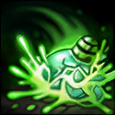

核心裝備
 殞落王者之劍
殞落王者之劍 芮蘭颶風箭
芮蘭颶風箭 臨界點
臨界點 鬼索的狂暴之刃
鬼索的狂暴之刃 幻影之舞
幻影之舞
以下為本站 7.2d 校正後的標準配置；實戰仍需依敵方陣容調整。


技能優先：E > Q > W
普攻使目標感染死亡毒液並持續受到真實傷害，可疊加多層；三技會依層數造成額外爆發。
短暫延遲後進入偽裝並提高跑速；脫離偽裝後獲得攻速，受死亡毒液感染的敵方英雄陣亡時會重置冷卻。

投擲毒桶形成緩速區域，並持續替範圍內敵人疊加死亡毒液，用於封路與加速三技爆發。
引爆附近所有受死亡毒液感染的敵人，依疊層造成額外物理傷害；滿層目標還會把效果擴散給附近敵人。
短時間提高物攻與攻擊距離，普攻轉為可穿透直線上多名敵人的弩箭，是團戰範圍輸出核心。
1技進入偽裝 → 2技緩速疊毒 → 普攻疊毒 → 持續普攻 → 3技引爆
先用潛伏避開正面視野，接近後丟二技限制走位並取得脫離偽裝的攻速。打一輪普攻後用三技收尾，不必為滿層而追進危險區。
1技找側面角度 → 4技增加射程 → 穿透普攻 → 2技封走位 → 持續穿透 → 3技滿層引爆
從側面或前排後方開大，讓弩箭沿同一直線穿過多人。二技應放在敵方撤退方向，三技留到主要目標毒層足夠時再引爆。
3技收掉殘血 → 1技冷卻重置 → 進入偽裝轉位 → 2技留人 → 普攻疊毒 → 再次引爆
受死亡毒液感染的敵方英雄陣亡後，潛伏會重置。先收掉殘血再重新偽裝換位，避免沿原本路線硬追下一個目標。
圖奇對線射程與換血能力偏弱，先以補刀和血量為優先。敵方關鍵技能交掉後，可用潛伏從視野外接近，脫離偽裝取得攻速，再用虛弱之毒緩速、普攻疊毒並以毒性爆發收尾；沒有河道視野時不要為了疊滿毒層追過兵線。
殞落王者之劍、芮蘭颶風箭與臨界點成形後，跟著隊伍處理物件並利用潛伏轉線或繞側。進場前先確認敵方硬控與真視位置；大絕應從安全側翼或前排後方開啟，讓穿透弩箭同時命中多名敵人。
團戰不要過早現身，等待敵方陣形集中或關鍵控制交出後再開潛伏找角度。大絕期間以直線穿透最多人的方向走砍，虛弱之毒放在撤退路線；毒層接近滿層時施放三技完成爆發，活著打完整個大絕比強行繞到後排更重要。
對局名單是本站依英雄機制與目前配置整理的參考，不等同固定勝率。
先照標準出裝與符文走；只有敵方陣容真的形成威脅時，再替換必要格子。
觸發：敵方至少有 2 名高生命／高護甲前排，而且團戰多數時間必須先處理前排。
標準配置已經有足夠打坦能力；如果已有斷切、百分比穿透或殞落，就不要為了「坦克多」硬拆暴擊／攻速核心。
觸發：敵方有多名能直接貼到後排的刺客／爆發英雄，或你常在開始輸出前就被秒。
守護天使提供物防與復活，適合把最後一個純輸出位換成容錯。
魔提斯深淵提供魔防與低血量魔法護盾，比單純增加輸出更能保住進場或持續輸出。
觸發：敵方有多個硬控，而且控制鏈會讓你直接失去輸出時間。
先購買水銀飾帶取得主動解控，之後再合成水星彎刀；水銀飾帶是合成組件，不是另一件要與水星彎刀互換的成裝。
犧牲部分輸出型傳奇符文，換取韌性與緩速抗性。
提醒：水星彎刀的路線是先購買水銀飾帶，再完成水星彎刀；水銀飾帶不是另一件終局成裝。
觸發：敵方有多名高治療／高吸血英雄，或核心前排能在團戰中大量回血。
致死宣告兼顧暴擊、穿透與重創，適合射手在不拆核心輸出邏輯下補反治療。
觸發：敵方有多個大量護盾來源，而且己方沒有其他更適合負責反護盾的英雄。
巨蛇鋒牙降低敵方護盾，只有護盾真的成為團戰主要問題時才值得犧牲一般輸出位。
提醒：反護盾裝通常是彈性位，不要只因敵方有一個小護盾就固定購買。
7.2a 飛龍路第四批正式攻略：技能名稱與核心機制依 Riot Games 台灣《激鬥峽谷》圖奇英雄頁校正；出裝、符文、召喚師技能與技能順序交叉參考 WildRiftFire Patch 7.2a 後整合。Tier 維持本站既有飛龍路評級。｜v68：套用吉茵珂絲 v64 固定母版。｜v76 第二階段：新增 3 位合適輔助與搭配理由，並完成攻略內容欄位驗收。
本站於 2026-08-27 依 Patch 7.2d 重新檢查此配置。 Tier、出裝、符文與對局屬於 Wild Rift Guide 的整理與分析，不是 Riot Games 官方推薦；版本改動後會再依官方公告與實戰資料校正。